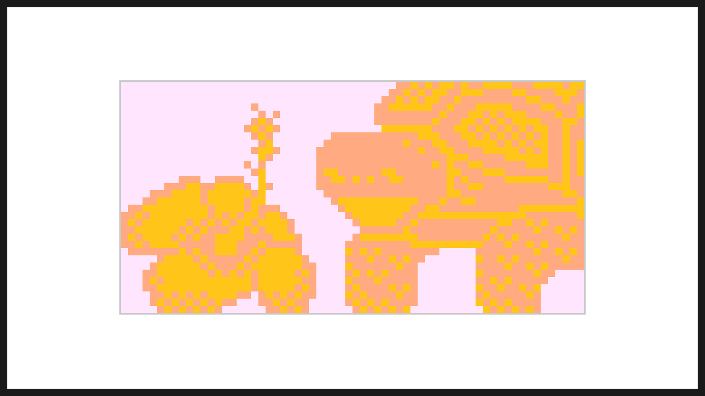

Hibiscus
Game Design
2024
A cosy game poem about a hibiscus plant, a pet tortoise, and a dream
Play for free: casino-teelicht.itch.io/hibiscus
Hibiscus was my submission for the final assignment of the course Game Analysis by Perttu Hämäläinen
during my
game design minor at Aalto University. In this course, I learned about the work of Jordan Magnuson and the
game poem genre. We also covered psychology in games in depth, including behavioural design, intrinsic and
extrinsic player motivation, and emotions. For the final assignment, the task was to create a game poem that
would elicit a particular emotion.
Music by J.C Muyonyo
Software
bitsy.org
Photoshop (cover art)
Idea
The hibiscus is my favourite plant because it brings me joy every time it grows new buds and they bloom overnight into beautiful flowers. Also, I find tortoises really cute, and apparently tortoises really enjoy eating hibiscus flowers. So I decided to have them both as key characters in my game.
Environment
I once had a lucid dream about hiking on an alien forest planet. When I woke up from this dream, I had a positive feeling that is hard to describe and has remained deeply etched in my memory. This, along with my impressions of Finnish nature, served as inspiration for the dream's environment.
Story
The story of Hibiscus is inspired by a scene from the SpongeBob episode Sleepy Time (1999), in which SpongeBob enters the dream of his pet snail Gary. Gary, a talking humanoid in the dream, warns SpongeBob about messing with other people's dreams and quotes lines from the poem "Let me not mar that perfect dream" by Emily Dickinson. In Hibiscus, I used the same poem with the intention of offering different interpretations of dreams and reality to the player.
